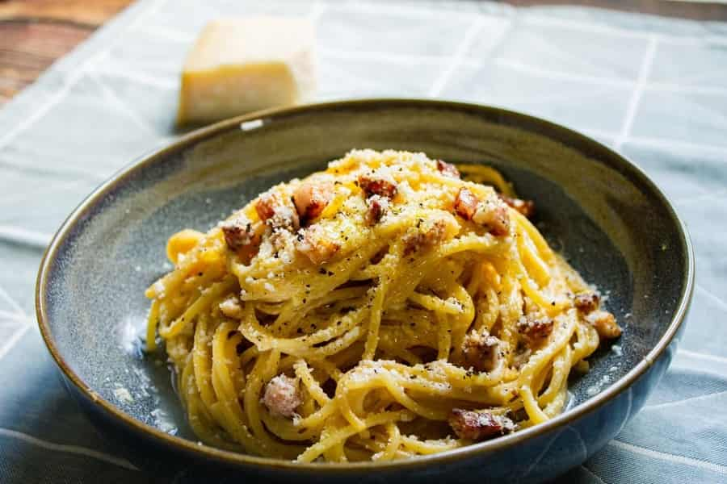

Carbonara's Recipe

Description
There may be no more beloved Italian dish than carbonara: hot pasta tossed with a creamy sauce of raw beaten eggs,
accentuated with crisp bits of guanciale, and finished with a shower of grated aged Parmesan cheese plus freshly ground black pepper.
Ingredients
- Pasta: 80g
- Guanciale: 80g
- Eggs: 2
- Parmesan: 45g
- Pepper: 1 tsp
- Salt
Steps
- In a first time, set one liter of water to boil with the salt. Once boiling, start to cook the pasta.
- Dice your guanciale and fry it until crispy starting on a cold pan on low/medium heat. Once golden brown, set aside and keep the fat.
- At this point, add cooking water that is twice that of the fat in the pan and set the heat on medium.
- In a bowl add two egg yolks, the toasted crushed peper, and the parmesan finely grated. Mix until you get a paste-like texture.
- Once your pasta is around 75% cooked, transfer them to the pan. Finish the cooking process by addind more water if necessary.
There should be just enough water to cover the pasta. Once the pasta are cooked, turn off the heat. There should be a small layer of water.
- Add the mix of egg yolks, parmesan, peper and stir. If there is not enough liquid to make it a cream, add a little bit of water.
- Once you reached a creamy texture, add the guanciale, plate, and grate some more parmesan on top.